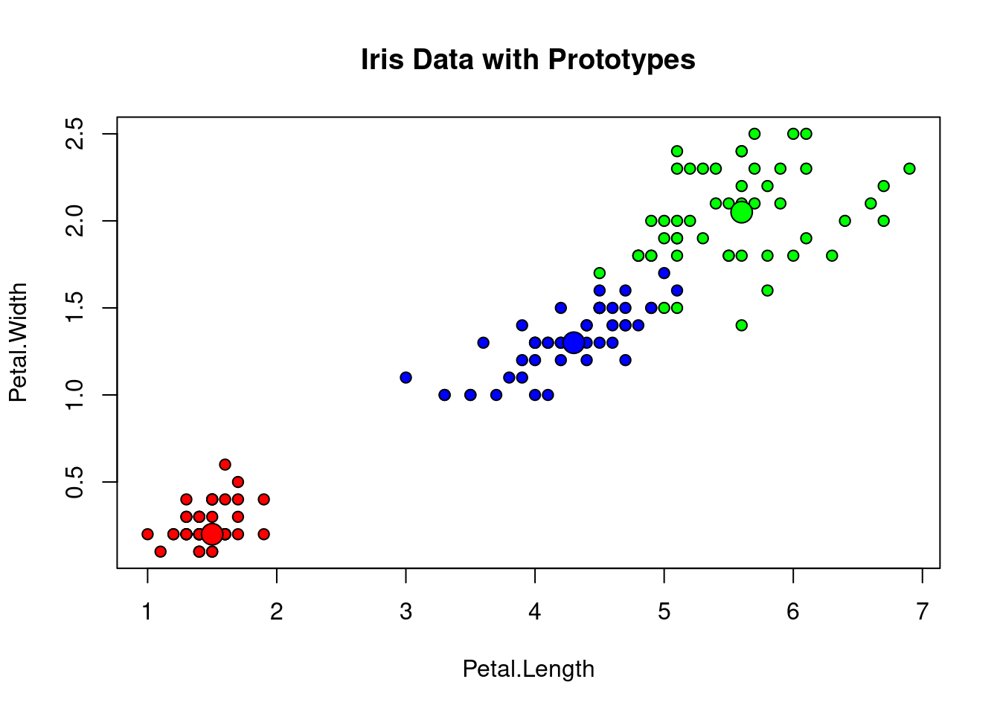

3 boosting
##Boosting
library(car)
data(Arrests)
summary(Arrests)## released colour year age sex
## No : 892 Black:1288 Min. :1997 Min. :12.00 Female: 443
## Yes:4334 White:3938 1st Qu.:1998 1st Qu.:18.00 Male :4783
## Median :2000 Median :21.00
## Mean :2000 Mean :23.85
## 3rd Qu.:2001 3rd Qu.:27.00
## Max. :2002 Max. :66.00
## employed citizen checks
## No :1115 No : 771 Min. :0.000
## Yes:4111 Yes:4455 1st Qu.:0.000
## Median :1.000
## Mean :1.636
## 3rd Qu.:3.000
## Max. :6.000#### you have to do this step first!
Arrests$released <- as.numeric(Arrests$released) -1
#install.packages("gbm")
library(gbm)
?gbm
gbm1 <- gbm(released ~., data = Arrests, distribution = "bernoulli",
n.trees = 500, interaction.depth = 5, n.minobsinnode = 1,
bag.fraction = 0.5, train.fraction = .75, n.cores = 8)
best.iter <- gbm.perf(gbm1, method = "OOB")
?gbm
print(best.iter)## [1] 16
## attr(,"smoother")
## Call:
## loess(formula = object$oobag.improve ~ x, enp.target = min(max(4,
## length(x)/10), 50))
##
## Number of Observations: 500
## Equivalent Number of Parameters: 39.85
## Residual Standard Error: 0.0002093gbm1## gbm(formula = released ~ ., distribution = "bernoulli", data = Arrests,
## n.trees = 500, interaction.depth = 5, n.minobsinnode = 1,
## bag.fraction = 0.5, train.fraction = 0.75, n.cores = 8)
## A gradient boosted model with bernoulli loss function.
## 500 iterations were performed.
## The best test-set iteration was 39.
## There were 7 predictors of which 7 had non-zero influence.summary(gbm1)
## var rel.inf
## age age 38.372118
## checks checks 22.750268
## year year 15.577375
## employed employed 8.806655
## colour colour 6.784342
## citizen citizen 4.617708
## sex sex 3.091534preds <- predict(gbm1, newdata = Arrests, n.trees = best.iter, type = "response")
table(Arrests$released, preds >.5)##
## FALSE TRUE
## 0 14 878
## 1 5 4329plot(gbm1, i.var = 1, n.trees = best.iter, type = "response")
plot(gbm1, i.var = 3, n.trees = best.iter, type = "response")library(pdp)
pd <- pdp::partial(gbm1, pred.var = "age", n.trees = best.iter, type = "classification")
pd <- pdp::partial(gbm1, pred.var = "age", n.trees = best.iter, type = "classification")
#which.class = 2L #which class does not work in the binary case
plotPartial(pd, smooth = T, lwd = 3, chull = T, train = Arrests, rug = T,
xlab = "Age in Year", ylab = "Fitted Probability of release")pd <- pdp::partial(gbm1, pred.var = "checks", n.trees = best.iter, type = "classification")
plotPartial(pd, smooth = T, lwd = 3, chull = T, train = Arrests, rug = T,
xlab = "Number of Checks", ylab = "Fitted Probability of release")